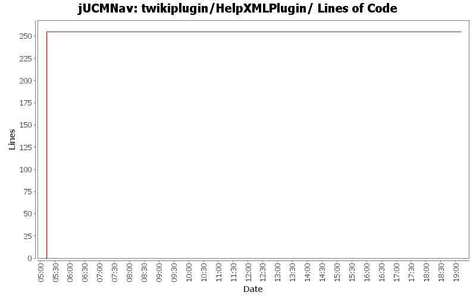

Summary Period: 2005-07-29 to 2005-07-29
[root]/twikiplugin/HelpXMLPlugin

Total Lines Of Code:
255 (2006-03-31 18:01)
| Author | Changes | Lines of Code | Lines per Change |
|---|---|---|---|
| Totals | 3 (100.0%) | 255 (100.0%) | 85.0 |
| jfroy | 2 (66.7%) | 255 (100.0%) | 127.5 |
| jkealey | 1 (33.3%) | 0 (0.0%) | 0.0 |
bugs 372 - 378 - 380 - 379 - 273 - 375 - massive changes in deletion command infrastructure. mainly refactoring but also various functionality additions
also committing minor changes to the twiki plugin created by JFRoy and an ant script to generate javadoc on a windows machine.
0 lines of code changed in:
TWiki plugin used to generate automatically help.xml file from a TWiki page
255 lines of code changed in:
Generated by StatCVS 0.2.4